0011 生口島～大三島～竹原さざなみ海道

こんにちは、hanaponです。
ぷらっと思いついて、お昼は尾道から３つ目の島、生口島（いくちじま）へ。
日替わり定食（生姜焼き・タコのから揚げ、もつ煮込み）が大変美味でした↓。近々、家でも生姜焼き・・つくろう（笑）。
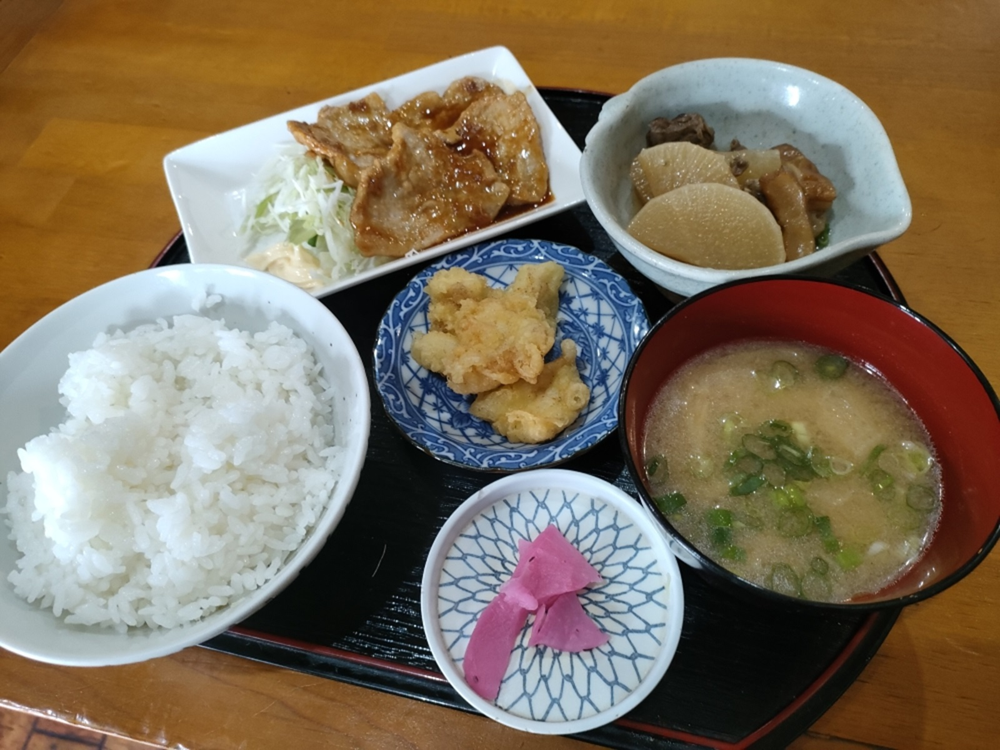
海外の旅行者向けの、令和なモダン風な食事も良いですが、昭和な佇まいの定食やさんで、長年地元価格で提供してくれるお店はとても大事にしたいところです。
その後、大三島ではのんびり、猫とたわむれ（笑）↓
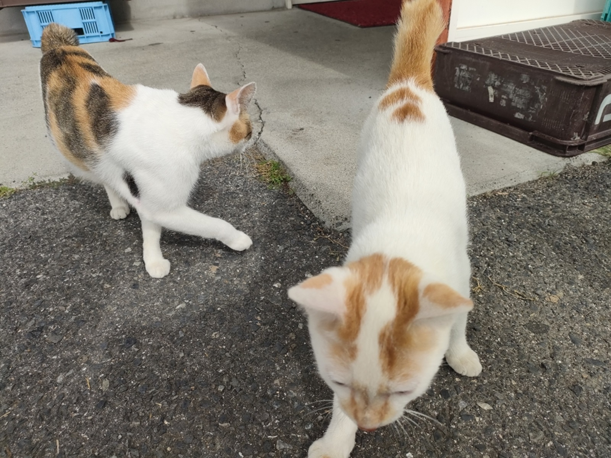
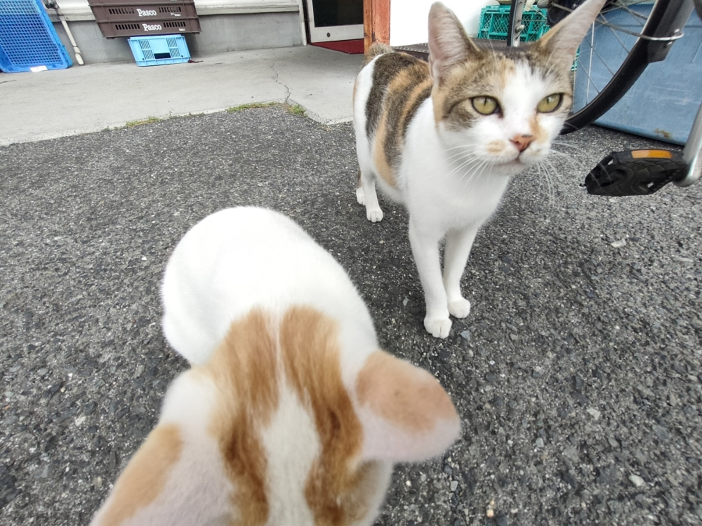
たわむれすぎて、のんびりしすぎて、大三島の盛港からフェリーの乗船時間に何とか間に合い・・↓
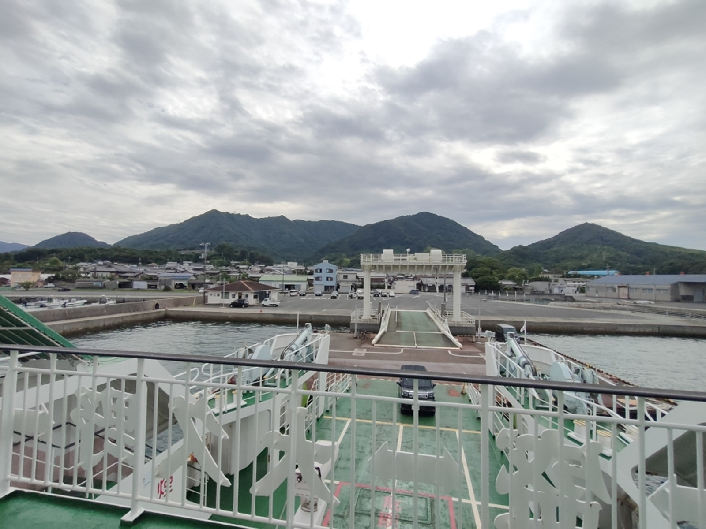
広島県竹原市忠海（ただのうみ）港へ↓。
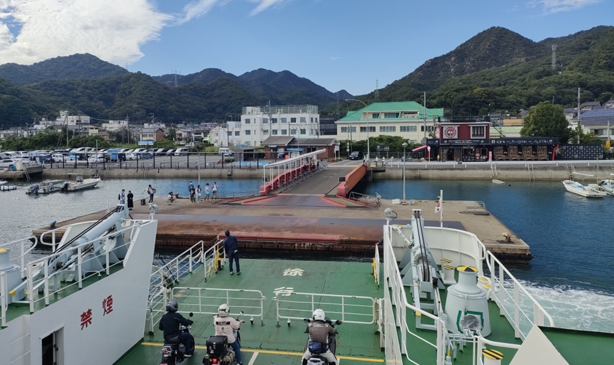
サムネイル写真も忠海港から乗船したフェリーを眺めました。
車も乗船できるフェリーはたいてい、自転車の人に優しいかなと（笑）
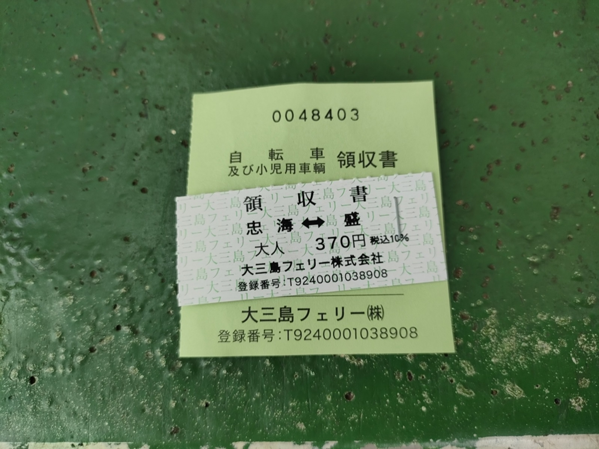
その後はさざなみ海道で右手にSAZANAMIの看板があったり、竹原火力発電所を通り過ぎ、竹原市内へ。
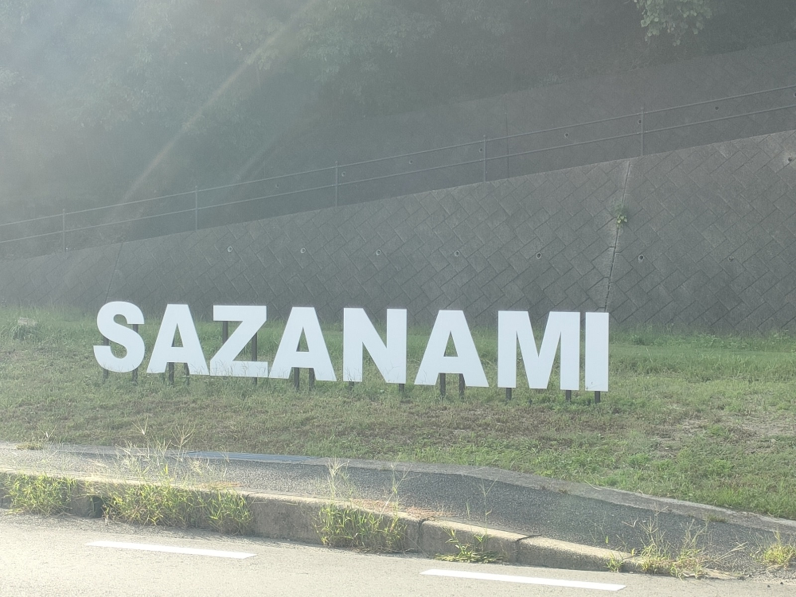
竹原の町並み保存地区もゆっくり眺め↓
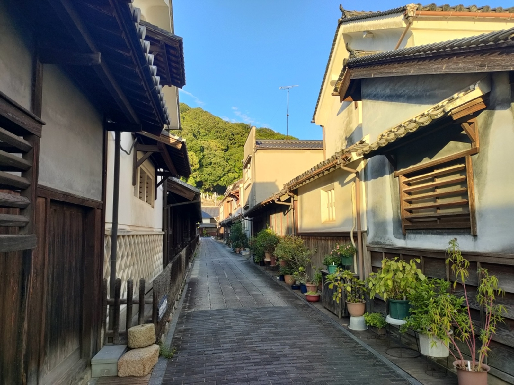
道の駅たけはらに立ち寄り↓
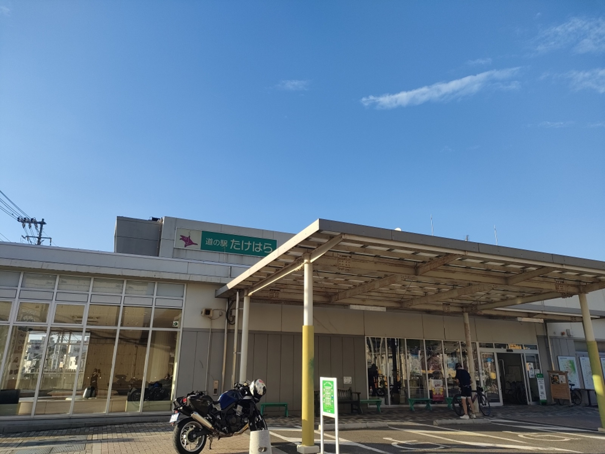
さまざまなぶどうが並んでいることに歓喜し（笑）、実家へ送ったり、自分に買ったり↓
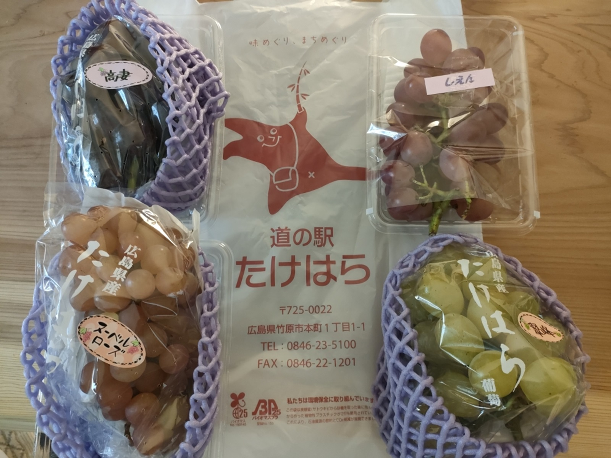
さまざなま品種のぶどうが幸せな気持ちにさせてくれました！。ちなみに、ぶどうは10月まで販売されているそう。
夕飯は竹原市内で・・・・
初見で入ったお店の方が、なんと、今わたしが住んでいる島の元住人であることが判明。
不思議なご縁があるものだと。
久しぶりに頼んでみた ”アジの南蛮漬け”。
私の中では小アジが複数漬かっているイメージでしたが、まるごと１匹のアジの南蛮漬けが出てきて衝撃的でした↓。
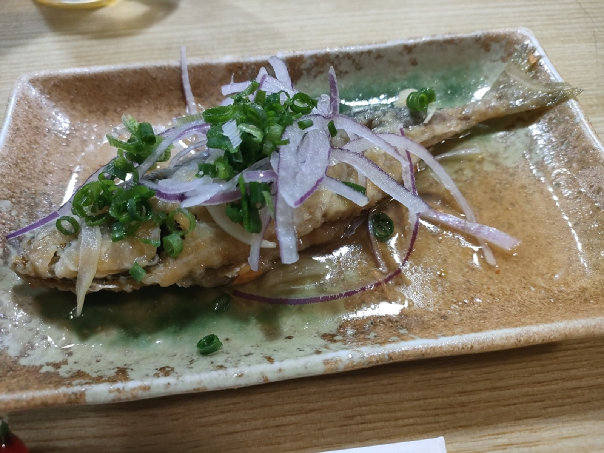
これはこれでおいしく、料理がしやすくて良いかもと。
いろいろ話が弾んで、とても楽しい時間を過ごすことができました。帰りがけにおみやげ（おすすめのお酒）までいただきました↓（大感謝）
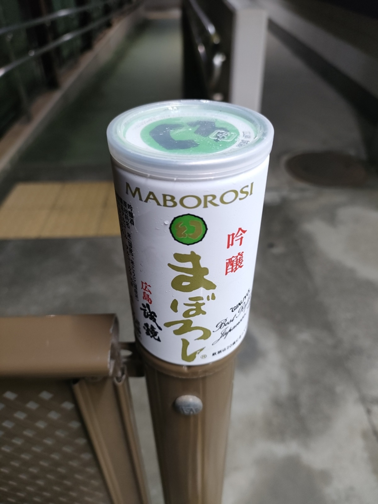
竹原市内に１泊して、次の日はおすすめしてもらった手作りサンドイッチのお店へ↓
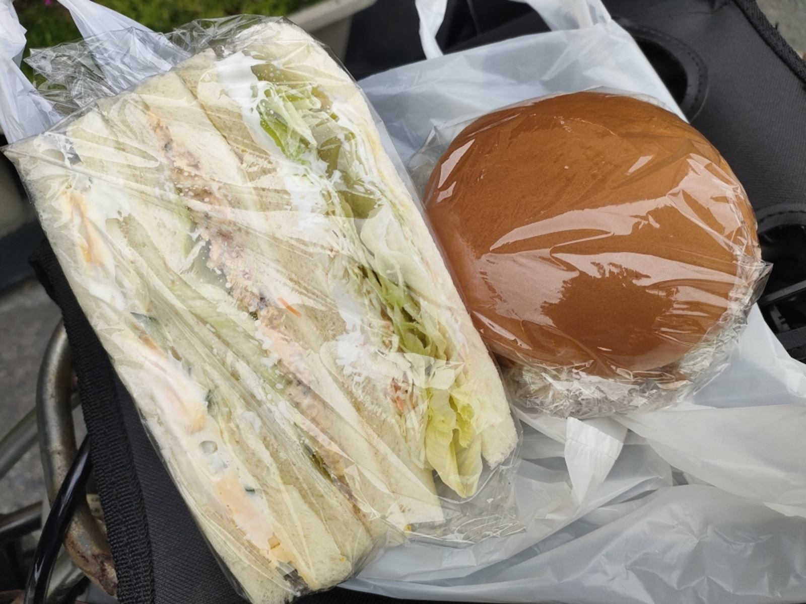
竹原から１９キロ先の三原までサイクリングして、しまなみへ戻った１泊２日の旅でありました。
またぜひ行きたい、です。